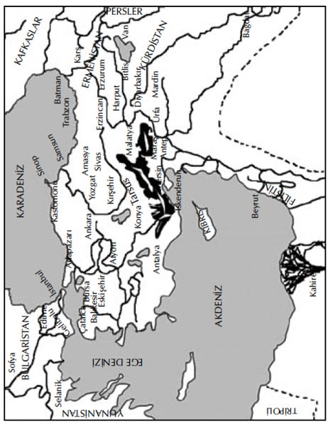

ON İKİNCİ BÖLÜM
SONUÇ
Mustafa Kemal hayatiyetle dopdolu ve dipdiri, Türkiye’nin tek adamıydı.
O, steplerde yaşayan Tatarların bir geri dönüşü, bir anakronizm, ilkel ve vahşi güce sahip biri, dünyaya gelmesi gerektiği çağdan çok geç doğmuş bir liderdir.
Tüm Orta Asya’nın göçü sırasında doğmuş olsaydı, Bozkurt sancağı altında ve bir bozkurtun yüreği ve içgüdüleriyle Süleyman Şah’ın yanında at koşturuyor olurdu.
Askeri dehası ile duyguların, bağlılık ve ahlâki değerlerin zayıflatamadığı acımasız kararlılığıyla, ülkeleri fetheden, kentleri yakıp yıkan ve seferleri arasındaki barış dönemlerini zevk ve safa âlemleriyle dolduran, vahşi akıncıların başında bir Timurlenk veya Cengiz Han olabilirdi.
Oysa o, ölü parçalarını budayıp, küçük ve yoksul bir tarım ülkesini indirgediği can çekişen bir imparatorluğun varisi olarak doğmuştu.
Ucuz siyaset tuzaklarına, küçük reformlara, bön ve ağırkanlı bir halkı eğitme zorunluluğu gibi rutin işlerin tuzağına düşmüş durumda.
Bir imparatorun zihniyetiyle kent dışında, küçük Çankaya köyündeki evinden hükmediyor. O, sabah giysileri içinde silah olarak bir kara tahta ile bir de tebeşir parçası taşıyan ilkel bir reistir.
Büyüklüğü bilgisinde ve imkânlarının sınırlarının farkında olmasında yatıyordu.
Her şeyden çok, o büyük inancında -bu halkın muhteşem geleceğine olan inancında- büyüktü.
“Bütün ulusları tanıyorum,” diyordu, “Onları bir halkın karakterinin çırılçıplak kaldığı bir anda, savaş alanında, ateş altında, ölümün eşiğindeyken inceledim. Türk milleti, yemin ederim ki milletimizin manevi gücü, bütün dünyanınkinden üstündür... “
“Yürümeyi öğreninceye ve yolu tanıyıncaya dek, milletinin elinden tutup ben yönlendireceğim. Ancak ondan sonra kendi başına karar verebilir, kendi kendisini yönetebilir. O zaman benim eserim de tamamlanmış olacaktır.”
Bu belki yanılgı içindeki bir çılgının haykırışıdır. Belki de iyiyi ve doğruyu inşa etmek üzere Evrenin Büyük Mimarı’ndan esinlenmiş birinin sesidir.
O, Diktatördür. Gelecek, onun güçlü avuçları içinde uzanmaktadır. Eğer bu eller gevşer, titrer ve başaramazsa, her şeyi mahvedecek kadar güçlü olsa da eğer inşa edemezse, o zaman Türkiye ölecektir.
Ailesi, dostu olmayan yalnız bir adam olarak, Türkiye’nin halkını sahip olduğu tüm özel mülklerinin ve iktidarının varisi yapmıştır.
O, Türkiye’de bir daha kesinlikle bir diktatör ortaya çıkmasın diye diktatör olmuştur.
SON

Türkiye (1910’da Osmanlı) Haritası